The purpose of this tutorial is to demonstrate the simulation of cardiovascular fluid mechanics problems with oomph-lib. We showed in another tutorial how to use VMTK together with oomph-lib's conversion code
to generate unstructured fluid and solid meshes for the simulation of physiological fluid-structure interaction problems based on data from medical images. Here we show how to simulate steady finite-Reynolds-number flow through a (rigid) iliac bifurcation. A particular feature of this problem is that, unlike the problem considered in another tutorial, the in- and outflow boundaries are not aligned with any coordinate planes. Parallel in- and outflow is therefore enforced by a Lagrange multiplier method, implemented using oomph-lib's FaceElements.
The problem studied here also serves as a "warm-up problem" for the corresponding fluid-structure interaction problem in which the vessel wall is elastic and deforms in response to the traction that the fluid exerts onto it.
We stress that the tutorial focuses on the implementation aspects, not the actual physics. Since the driver code discussed here is also used in the library's self-tests we deliberately use a very coarse mesh and restrict ourselves to steady flows. The results shown below are therefore unlikely to bear much resemblance to the actual flows that arise in vivo. The section How to make the simulation more realistic at the end of this tutorial provides several suggestions on how to make the simulation more realistic.
The problem (and results)
The two figures below show the geometry of the blood vessel (obtained from a scan of an iliac bifurcation, using the procedure discussed in oomph-lib's VMTK tutorial) and the flow field (velocity vectors and pressure contours) for a nominal Reynolds number of 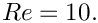 (See What does the Reynolds number mean in this problem? for a more detailed discussion of the Reynolds number.) The flow is driven by an applied pressure drop between the in- and outflow boundaries, as in the previous example.

The figure below shows more clearly that the in- and outflow from the upstream and downstream cross-sections is parallel, even though the cross-sections are not aligned with any the coordinate planes.

Imposing parallel in- and outflow
In most of the Navier-Stokes problems we have considered so far, the geometry of the fluid domain was such that the in- and outflow cross-sections were aligned with the Cartesian coordinate planes. In such geometries the imposition of parallel in- and outflow is straightforward as it only requires pinning of the transverse velocity components. A pressure drop between upstream and downstream ends can be applied by attaching NavierStokesTractionElements to the bulk elements that are adjacent to the relevant domain boundaries.
In the current problem, the in- and outflow cross-sections have some arbitrary orientation, implying that when the in- or outflow is parallel (or, more accurately, orthogonal to the in- or outflow cross sections), neither of the three velocity components vanishes. The easiest way to enforce parallel outflow in such situations is to employ Lagrange multipliers to enforce the two constraints
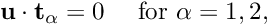
where 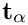 (for 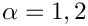) are the two tangent vectors spanning the in- or outflow cross-sections. Physically, the Lagrange multipliers act as tangential tractions that enforce the parallel flow. The Lagrange multipliers introduce additional degrees of freedom into the problem and their implementation as ImposeParallelOutflowElements employs a technique similar to that used to enforce prescribed boundary displacements in solid mechanics problems. (This is discussed in another tutorial.) The ImposeParallelOutflowElements also allow the specification of a pressure that acts on the fluid (in the direction opposite to the outer unit normal on the bulk fluid element).
The driver code
The driver code is very similar to that discussed in another example where we imposed parallel outflow in coordinate-aligned in- and outflow cross-sections. We will therefore only discuss the changes required to impose parallel flow in cross-sections with arbitrary orientation.
Problem parameters
The namespace specifying the problem parameters contains the Reynolds number and the in- and outflow pressures (rather than the complete traction vector):
The main function
The main function remains identical to that in the problem with axis-aligned outflow.
The Problem class
The Problem class is practically identical to that in the problem with axis-aligned outflow, apart from some trivial changes such as the provision of storage for meshes of ImposeParallelOutflowElements rather than NavierStokesTractionElements.
The Problem constructor
The problem constructor is also very similar. We start by building the fluid mesh, using the files created by tetgen :
Next, we set up a boundary lookup scheme that records which elements are located next to which domain boundaries, and specify the IDs of the mesh boundaries that coincide with the in- and outflow cross-sections. Note that this information reflects the specification of the boundary IDs in the tetgen *.poly file. [The conversion code create_fluid_and_solid_surface_mesh_from_fluid_xda_mesh.cc lists the relation between the original boundary IDs and the new ones (obtained by giving each surface facet a separate boundary ID) at the end of the *.poly file.]
We create the meshes containing the Lagrange multiplier elements and add all sub-meshes to the Problem's global mesh.
Next we apply the boundary conditions. We start by identifying the IDs of the boundaries that are subject to no-slip boundary conditions.
Next we loop over all boundaries, visit their nodes and pin all three velocity components if the boundary is subject to a no-slip condition:
We now check if the node in question is also located on the in- and outflow boundaries...
...and if it is, we pin the Lagrange multipliers. They are stored after the values allocated by the "bulk" elements and we obtain the index of the first value associated with the Lagrange multipliers from the BoundaryNodeBase::index_of_first_value_assigned_by_face_element() function.
The rest of the constructor is unchanged. We pass the pointer to the Reynolds number to the elements and assign the equation numbers:
Creating the Lagrange multiplier elements
The helper function create_parallel_outflow_lagrange_elements() loops over the bulk elements that are adjacent to the in- and outflow cross-sections and attaches ImposeParallelOutflowElements to the relevant faces. We store pointers to the newly-created elements in the appropriate meshes, and pass pointers to the doubles that specify the imposed pressure to the elements.
Post-processing
The post-processing routine is unchanged.
Comments and Exercises
What does the Reynolds number mean in this problem?
oomph-lib's implementation of the Navier-Stokes equations is based on their non-dimensional form so we typically expect the geometry of the problem to have been non-dimensionalised on a representative lengthscale,  . When dealing with geometries that are obtained from medical images, the vessel coordinates are typically provided as dimensional quantities, e.g. in millimetres. Discarding the unit of the coordinates (i.e. using a non-dimensional coordinate 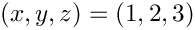 to represent the point located at 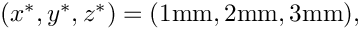 say) is therefore equivalent to non-dimensionalising all lengths on a reference length of 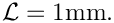 Recall that the Reynolds number is defined as
. When dealing with geometries that are obtained from medical images, the vessel coordinates are typically provided as dimensional quantities, e.g. in millimetres. Discarding the unit of the coordinates (i.e. using a non-dimensional coordinate 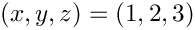 to represent the point located at 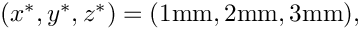 say) is therefore equivalent to non-dimensionalising all lengths on a reference length of 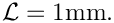 Recall that the Reynolds number is defined as
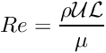
where 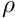 and  are the fluid density and viscosity, respectively. The lengthscale 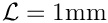 does obviously not provide a measure of the dimension of our blood vessel whose diameter (at the inlet) is about 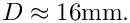 The nominal Reynolds number of 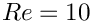 used in the computations is therefore equivalent to an actual Reynolds number (formed with the vessel diameter) of
are the fluid density and viscosity, respectively. The lengthscale 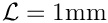 does obviously not provide a measure of the dimension of our blood vessel whose diameter (at the inlet) is about 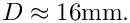 The nominal Reynolds number of 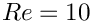 used in the computations is therefore equivalent to an actual Reynolds number (formed with the vessel diameter) of
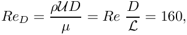
where the velocity scale  is formed with the (dimensional) applied pressure drop 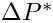 between the in- and outflow cross-sections, as in the problem with axis-aligned in- and outflow cross-sections,
is formed with the (dimensional) applied pressure drop 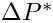 between the in- and outflow cross-sections, as in the problem with axis-aligned in- and outflow cross-sections,
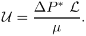
How to make the simulation more realistic
The simulation presented above is obviously very crude and serves primarily as a proof of concept. However, it is straightforward to address most of the shortcomings and we encourage you to explore the following improvements:
- Generate a finer fluid mesh using the instructions in
oomph-lib'sVMTK tutorial We are hoping to make the image files used in this tutorial available soon. Please contact us if you can't wait. Remember that you will have to update the enumeration of the domain boundaries if you change the mesh.
- Attach "flow extensions" to the in- and outflow cross-sections, using the technique described in
oomph-lib'sVMTK tutorial.
- Make the problem time-dependent and apply a period driving pressure drop.
Source files for this tutorial
- The source files for this tutorial are located in the directory:
demo_drivers/navier_stokes/vmtk_fluid/
- The driver code is:
demo_drivers/navier_stokes/vmtk_fluid/vmtk_fluid.cc
PDF file
A pdf version of this document is available. \